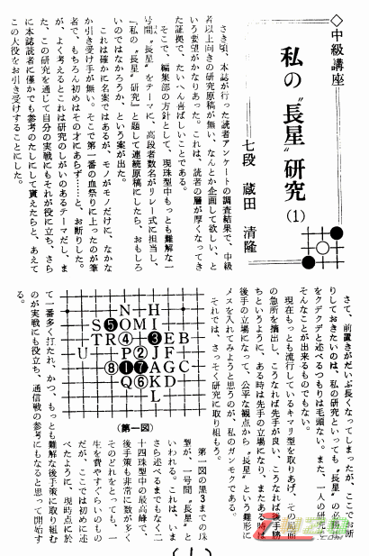
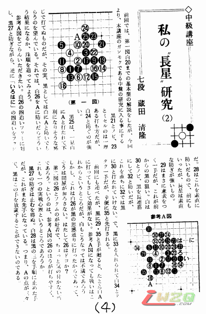
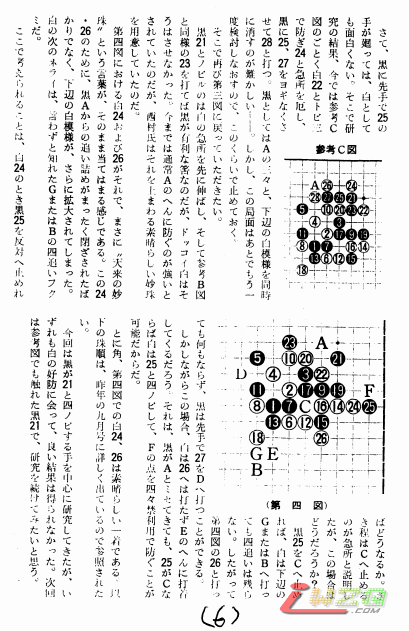
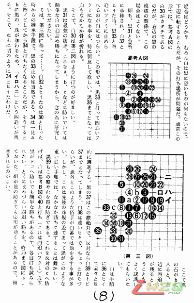
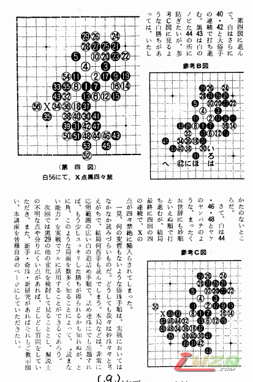
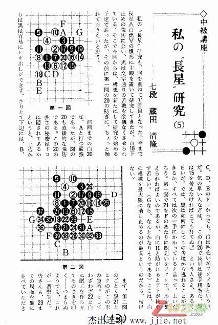
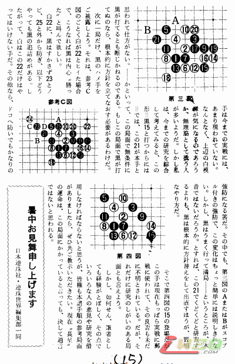
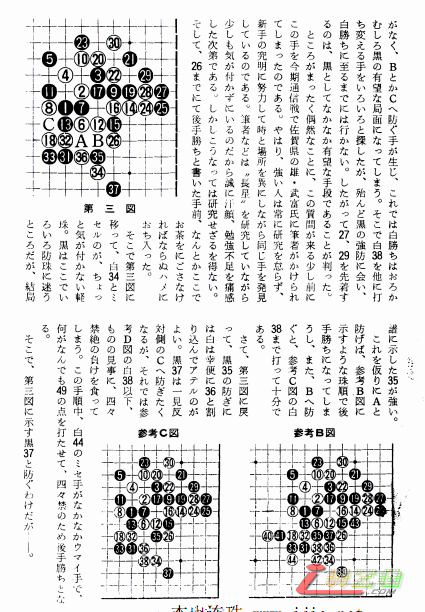
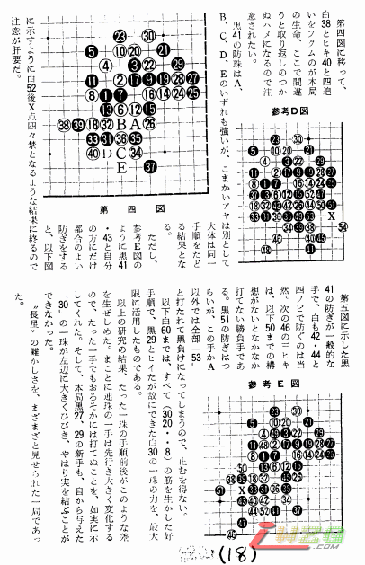

i田清隆７段讲长星
首页
定式及研究
#1 i田清隆７段讲长星 作者：有志青年 发表时间：2009-2-17 12:00:25
【有志注：此内容来自杰出连珠网，全日文内容，望有兴趣者翻译成中文供国内五子棋爱好者学习，在此感谢】


#2 Re:i田清隆７段讲长星 作者：有志青年 发表时间：2009-2-17 12:00:48

#3 Re:i田清隆７段讲长星 作者：有志青年 发表时间：2009-2-17 12:03:26

#4 Re:Re:i田清隆７段讲长星 作者：有志青年 发表时间：2009-2-17 12:04:28

#5 Re:Re:Re:i田清隆７段讲长星 作者：有志青年 发表时间：2009-2-17 12:04:59

#6 i田清隆７段讲长星 作者：有志青年 发表时间：2009-2-17 12:05:31

#7 Re:i田清隆７段讲长星 作者：有志青年 发表时间：2009-2-17 12:23:51

#8 Re:i田清隆７段讲长星 作者：有志青年 发表时间：2009-2-17 12:25:01

#9 Re:i田清隆７段讲长星 作者：有志青年 发表时间：2009-2-17 12:26:07

#10 Re:i田清隆７段讲长星 作者：有志青年 发表时间：2009-2-17 12:26:35

#11 Re:i田清隆７段讲长星 作者：有志青年 发表时间：2009-2-17 12:27:23

#12 Re:i田清隆７段讲长星 作者：有志青年 发表时间：2009-2-17 12:27:43

#13 Re:Re:i田清隆７段讲长星 作者：有志青年 发表时间：2009-2-17 12:28:20

#14 Re:i田清隆７段讲长星 作者：有志青年 发表时间：2009-2-17 12:29:56

#15 Re:i田清隆７段讲长星 作者：有志青年 发表时间：2009-2-17 12:30:16

#16 Re:i田清隆７段讲长星 作者：有志青年 发表时间：2009-2-17 12:30:36

#17 Re:i田清隆７段讲长星 作者：有志青年 发表时间：2009-2-17 12:30:59

#18 Re:i田清隆７段讲长星 作者：有志青年 发表时间：2009-2-17 12:31:25

#19 Re:i田清隆７段讲长星 作者：岳麓小棋后 发表时间：2009-3-25 22:01:17
有字天书看不懂看看谱吧
#20 Re:i田清隆７段讲长星 作者：龙泉 发表时间：2009-7-16 17:40:58
看不懂的
#21 Re:i田清隆７段讲长星 作者：起航 发表时间：2009-8-17 0:38:27
可惜了，不会日文。
#22 Re:i田清隆７段讲长星 作者：封禺 发表时间：2009-9-5 1:47:17
万分感谢!一直苦于寻找长星的谱子.我日文不好,只能断断续续看下来.但是谱子很不错.我记下了.再次表示感谢.
#23 Re:i田清隆７段讲长星 作者：总要注册 发表时间：2009-10-3 2:20:11
眼晕
但是还是谢了 努力学习
#24 Re:Re:i田清隆７段讲长星 作者：uniwin 发表时间：2009-10-26 22:14:14
引用：
原文由 封禺 发表于 2009-9-5 1:47:17 :
万分感谢!一直苦于寻找长星的谱子.我日文不好,只能断断续续看下来.但是谱子很不错.我记下了.再次表示感谢.
这位兄弟，整理一下，以lib形式发给大家共享吧，把那些个日文大体翻译成中文。
#25 Re:i田清隆７段讲长星 作者：岳麓小棋皇 发表时间：2009-10-27 11:47:08
藏田清隆九段是本连珠社理事、京都连珠会会长、城西连珠会主宰、清流寺住职、日本著名连珠大师.
藏田清隆九段于2008年5月25日下午在住所清流寺院突发心脏病不幸去世，享年73岁。
#26 Re:i田清隆７段讲长星 作者：小帮帮 发表时间：2009-12-25 5:43:07
看谱也觉得有点乱!自己拆一下看看吧